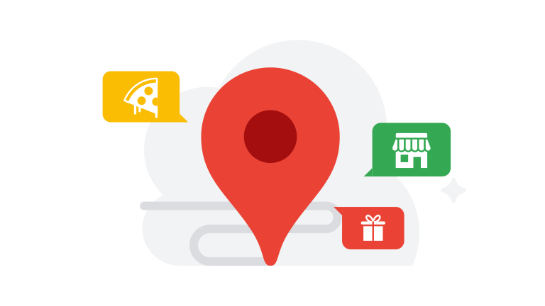

<!DOCTYPE html><html lang="pl"><head>
    <meta charset="utf-8">
    <meta content="initial-scale=1, minimum-scale=1, width=device-width" name="viewport">
    <title>Informacje oÂ&nbsp;prywatnoÅ›ci dla nastolatków: przewodnik dla nastolatków na temat prywatnoÅ›ci</title>
    <meta name="referrer" content="no-referrer">
    <meta name="description" content="Przewodnik dla nastolatków na temat prywatności. Tutaj znajdziesz odpowiedzi na najczęstsze pytania dotyczące prywatności, takie jak �Co to są dane?�.">
    <link rel="apple-touch-icon-precomposed" sizes="180x180" href="images/apple-touch-icon_1.png">
    <link rel="icon" type="image/png" sizes="32x32" href="images/favicon-32x32_1.png">
    <link rel="icon" type="image/png" sizes="16x16" href="images/favicon-16x16_1.png">
    <link rel="shortcut icon" href="favicon.ico">
    <link rel="stylesheet" href="css/css_35.css" nonce="tWbOVDi1A7bJLn7sSdUlkQ">
    <script src="js/google.js" nonce="tWbOVDi1A7bJLn7sSdUlkQ"></script>
    <script src="js/analytics.min_3.js" nonce="tWbOVDi1A7bJLn7sSdUlkQ"></script>
    <link href="css/index.min_10.css" rel="stylesheet" nonce="tWbOVDi1A7bJLn7sSdUlkQ">
  </head>

  <body class="glue-body">
<header class="glue-header glue-header--single glue-header--no-cta" glue-header-options="{&quot;drawer&quot;: &quot;false&quot;, &quot;hideOnScroll&quot;: &quot;true&quot;}">
  <div class="glue-header__bar glue-header__bar--desktop glue-header__drawer">
    <div class="glue-header__tier">
      <div class="glue-header__container">
        <div class="glue-header__lock-up">
          <a href="#page-content" class="glue-header__link glue-header__skip-content" aria-label="Przejdź do treści">
            <p class="glue-header__skip-content-text">Przejdź do treści</p>
          </a>
          <div class="glue-header__logo">
            <a class="glue-header__logo-link" href="../../../policies/privacy/teens/" aria-label="Przewodnik dla nastolatków na temat prywatności" title="Przewodnik dla nastolatków na temat prywatności">
              <div class="glue-header__logo-container">
                <svg role="img" aria-hidden="true" class="glue-header__logo-svg" alt="">
                  <use xlink:href="fonts/glue-icons_3.svg#google-color-logo"></use>
                </svg>
              </div>
              <p class="glue-header__logo--product">Przewodnik dla nastolatków na temat prywatności</p>
            </a>
          </div>
        </div>
      </div>
    </div>
  </div>

  <div class="glue-header__bar glue-header__bar--mobile">
    <div class="glue-header__tier">
      <div class="glue-header__container">
        <div class="glue-header__lock-up">
          <div class="glue-header__logo">
            <a class="glue-header__logo-link" href="../../../policies/privacy/teens/" aria-label="Przewodnik dla nastolatków na temat prywatności" title="Przewodnik dla nastolatków na temat prywatności">
              <div class="glue-header__logo-container">
                <svg role="img" aria-hidden="true" class="glue-header__logo-svg" alt="">
                  <use xlink:href="fonts/glue-icons_3.svg#google-color-logo"></use>
                </svg>
              </div>
            </a>
            <a href="../../../policies/privacy/teens/" class="glue-header__logo--product" aria-label="Przewodnik dla nastolatków na temat prywatności" tabindex="-1">Przewodnik dla nastolatków na temat prywatności</a>
          </div>
        </div>
      </div>
    </div>
  </div>
</header>    <main id="page-content">
      <section class="glue-page viewport-monitor">

<section class="hero-section">
  <div class="glue-grid glue-mod-text-center">
    <div class="glue-grid__col glue-grid__col--span-1"></div>
    <div class="glue-grid__col glue-grid__col--span-10">
      <div class="hero-image">
        
      </div>
      <h1 class="glue-headline glue-headline--headline-1 hero-headline">Twoja prywatność wÂ&nbsp;Google</h1>
      <div class="hero-section-content"><p>Tutaj znajdziesz odpowiedzi na najczęstsze pytania dotyczące prywatności, takie jak �<a href="#what_is_data_ans">Co <em>to są</em> dane</a>?�. Aby dowiedzieć się więcej, zapoznaj się z&nbsp;<a href="https://policies.google.com/privacy" rel="noopener" target="_blank">Polityką prywatności Google</a>.</p></div>
    </div>
    <div class="glue-grid__col glue-grid__col--span-1"></div>
  </div>
</section><section class="overview-section glue-mod-spacer-1-bottom" id="overview">
  <div class="glue-grid">
    <div class="glue-grid__col--span-0-sm glue-grid__col--span-2-md glue-grid__col glue-grid__col--span-0"></div>
    <div class="glue-grid__col--span-4-sm glue-grid__col--span-8-md glue-grid__col glue-grid__col--span-12">
      <div class="glue-grid">
          <div class="glue-grid__col--span-4-sm glue-grid__col--span-4-md
              glue-grid__col glue-grid__col--span-3 glue-mod-text-center glue-mod-spacer-4-bottom">
            <div class="card-icon">
              
            </div>
            <p class="glue-headline glue-headline--headline-5 card-heading">Twoja lokalizacja</p>
            <a class="card-cta" aria-label="Przejdź do tematu - Twoja lokalizacja" href="#your_location">Przejdź do tematu</a>
          </div>
          <div class="glue-grid__col--span-4-sm glue-grid__col--span-4-md
              glue-grid__col glue-grid__col--span-3 glue-mod-text-center glue-mod-spacer-4-bottom">
            <div class="card-icon">
              
            </div>
            <p class="glue-headline glue-headline--headline-5 card-heading">UdostÄ™pnianie wÂ&nbsp;Google</p>
            <a class="card-cta" aria-label="Przejdź do tematu - UdostÄ™pnianie wÂ&nbsp;Google" href="#sharing_on_google">Przejdź do tematu</a>
          </div>
          <div class="glue-grid__col--span-4-sm glue-grid__col--span-4-md
              glue-grid__col glue-grid__col--span-3 glue-mod-text-center glue-mod-spacer-4-bottom">
            <div class="card-icon">
              
            </div>
            <p class="glue-headline glue-headline--headline-5 card-heading">Dane iÂ&nbsp;personalizacja</p>
            <a class="card-cta" aria-label="Przejdź do tematu - Dane iÂ&nbsp;personalizacja" href="#data_and_personalization">Przejdź do tematu</a>
          </div>
          <div class="glue-grid__col--span-4-sm glue-grid__col--span-4-md
              glue-grid__col glue-grid__col--span-3 glue-mod-text-center glue-mod-spacer-4-bottom">
            <div class="card-icon">
              
            </div>
            <p class="glue-headline glue-headline--headline-5 card-heading">Masz wszystko pod kontrolÄ…</p>
            <a class="card-cta" aria-label="Przejdź do tematu - Masz wszystko pod kontrolą" href="#you_are_in_control">Przejdź do tematu</a>
          </div>
      </div>
    </div>
    <div class="glue-grid__col--span-0-sm glue-grid__col--span-2-md glue-grid__col glue-grid__col--span-0"></div>
  </div>
</section><section class="privacy-topics glue-mod-spacer-7-bottom">
    <div class="topic glue-grid your-location-section" id="your_location">
      <div class="glue-grid__col glue-grid__col--span-3 glue-grid__col--span-0-sm glue-grid__col--span-2-md"></div>
      <div class="glue-grid__col glue-grid__col--span-6 glue-grid__col--span-4-sm glue-grid__col--span-8-md">
        <div class="glue-mod-text-center topic-intro">
          <h2 class="glue-headline glue-headline--headline-2 topic-headline">Twoja lokalizacja</h2>
          <div class="topic-image">
            
          </div>
        </div>
        <div class="glue-mod-spacer-3-top topic-questions">
            <div class="question-item">
              <a aria-label="Czy Google zna mojÄ… lokalizacjÄ™?" href="#does_google_know_my_location_ans"><h3 id="does_google_know_my_location" class="question-item-content">Czy Google zna mojÄ… lokalizacjÄ™?</h3></a>
            </div>
            <div class="question-item">
              <a aria-label="Jak wÅ‚Ä…czać iÂ&nbsp;wyÅ‚Ä…czać lokalizacjÄ™?" href="#how_can_I_turn_location_on_and_off_ans"><h3 id="how_can_I_turn_location_on_and_off" class="question-item-content">Jak wÅ‚Ä…czać iÂ&nbsp;wyÅ‚Ä…czać lokalizacjÄ™?</h3></a>
            </div>
            <div class="question-item">
              <a aria-label="Jak dokÅ‚adne sÄ… informacje oÂ&nbsp;mojej lokalizacji?" href="#how_precise_is_my_location_ans"><h3 id="how_precise_is_my_location" class="question-item-content">Jak dokÅ‚adne sÄ… informacje oÂ&nbsp;mojej lokalizacji?</h3></a>
            </div>
            <div class="question-item">
              <a aria-label="Jak Google określa moją lokalizację?" href="#how_does_google_know_my_location_ans"><h3 id="how_does_google_know_my_location" class="question-item-content">Jak Google określa moją lokalizację?</h3></a>
            </div>
            <div class="question-item">
              <a aria-label="Kto może zobaczyć moją lokalizację?" href="#who_can_see_my_location_ans"><h3 id="who_can_see_my_location" class="question-item-content">Kto może zobaczyć moją lokalizację?</h3></a>
            </div>
        </div>
        <div class="topic-ans-section">
            <div class="glue-mod-text-left topic-ans" id="does_google_know_my_location_ans">
              <h3 class="glue-headline glue-headline--headline-3 glue-mod-spacer-2-bottom topic-ans-headline">Czy Google zna mojÄ… lokalizacjÄ™?</h3>
              <div class="topic-ans-content"><p>Gdy korzystasz z&nbsp;internetu, aplikacje i&nbsp;strony mogą rozpoznawać, gdzie mniej więcej się znajdujesz. Podobnie jest w&nbsp;przypadku Google. W&nbsp;zależności od ustawień Twojego urządzenia Google może też określać Twoją dokładną lokalizację. Zobacz, <a href="#how_precise_is_my_location_ans">jak dokładne są informacje o&nbsp;Twojej lokalizacji</a>.</p>
<p>Gdy szukasz czegoś w&nbsp;Google, np. korzystając z&nbsp;wyszukiwarki, Map lub Asystenta Google, używamy Twojej lokalizacji, aby wyświetlać Ci bardziej przydatne wyniki. Jeśli szukasz na przykład restauracji, najtrafniejsze wyniki będą prawdopodobnie dotyczyć miejsc w&nbsp;pobliżu.</p>
<p>Dowiedz się, <a href="#how_can_I_turn_location_on_and_off_ans">jak zarządzać swoją lokalizacją</a>.</p></div>

            </div>
            <div class="glue-mod-text-left topic-ans" id="how_can_I_turn_location_on_and_off_ans">
              <h3 class="glue-headline glue-headline--headline-3 glue-mod-spacer-2-bottom topic-ans-headline">Jak wÅ‚Ä…czać iÂ&nbsp;wyÅ‚Ä…czać lokalizacjÄ™?</h3>
              <div class="topic-ans-content"><p>Gdy wyszukujesz coś w&nbsp;Google, zawsze ustalamy ogólny obszar, na którym się znajdujesz. Google&nbsp;– tak jak inne używane przez Ciebie aplikacje i&nbsp;strony internetowe, które łączą się z&nbsp;internetem&nbsp;– może rozpoznawać Twoją przybliżoną lokalizację na podstawie adresu IP urządzenia. Aby dowiedzieć się więcej, zobacz <a href="https://support.google.com/websearch/answer/1696588" rel="noopener" target="_blank">Jak Google określa moją lokalizację</a>.</p>
<p>Aby określić, czy chcesz wysyłać swoją dokładną lokalizację podczas korzystania z&nbsp;usług Google, możesz włączyć lub wyłączyć dostęp do lokalizacji w&nbsp;przypadku poszczególnych aplikacji, stron internetowych i&nbsp;Twojego urządzenia.</p>
<p>Jeśli ustawisz adres domowy lub służbowy, a&nbsp;Google ustali, że jesteś w&nbsp;domu lub w&nbsp;pracy, przy wyszukiwaniu będzie wykorzystywany dokładny adres.</p></div>

            </div>
            <div class="glue-mod-text-left topic-ans" id="how_precise_is_my_location_ans">
              <h3 class="glue-headline glue-headline--headline-3 glue-mod-spacer-2-bottom topic-ans-headline">Jak dokÅ‚adne sÄ… informacje oÂ&nbsp;mojej lokalizacji?</h3>
              <div class="topic-ans-content"><h4>Ogólny obszar</h4>
<p>Gdy wyszukujesz coś w&nbsp;Google, zawsze ustalamy ogólny obszar, na którym się znajdujesz. Dlatego możemy wyświetlać Ci trafne wyniki i&nbsp;chronić Twoje konto dzięki możliwości wykrywania nietypowych działań (np. logowania się z&nbsp;nowego miasta).</p>
<p>Ogólny obszar ma ponad 3&nbsp;kilometry kwadratowe i&nbsp;obejmuje co najmniej 1000&nbsp;użytkowników, dzięki czemu nie można Cię zidentyfikować, a&nbsp;Twoja prywatność jest lepiej chroniona.</p>
<h4>Twoja dokładna lokalizacja</h4>
<p>Jeśli przyznasz nam odpowiednie uprawnienia, będziemy mogli korzystać z&nbsp;danych o&nbsp;Twojej dokładnej lokalizacji. Google potrzebuje dokładnej lokalizacji, aby podawać Ci najbardziej trafne wyniki wyszukiwania haseł takich jak �lody w&nbsp;pobliżu� lub szczegółowe trasy piesze do sklepów.</p>
<p>Dokładna lokalizacja określa, gdzie dokładnie jesteś (np. pod określonym adresem).</p></div>

            </div>
            <div class="glue-mod-text-left topic-ans" id="how_does_google_know_my_location_ans">
              <h3 class="glue-headline glue-headline--headline-3 glue-mod-spacer-2-bottom topic-ans-headline">Jak Google określa moją lokalizację?</h3>
              <div class="topic-ans-content"><p>Lokalizacja jest ustalana na podstawie różnych źródeł, które razem pozwalają określić w&nbsp;przybliżeniu Twoje położenie.</p></div>

                <div id="location">
                  <div class="glue-expansion-panels glue-mod-spacer-3-top" data-glue-expansion-panels-key="location">
                      <div class="glue-expansion-panel">
                        <div class="glue-expansion-panel-toggle" data-glue-expansion-panel-toggle-for="location-ans-panel-1">
                          <h3 class="glue-expansion-panel__button-header expansion-panel-header">Adres IP Twojego urzÄ…dzenia</h3>
                          <svg role="img" alt="Expand" aria-hidden="true" class="glue-icon glue-expansion-panel__button-arrow">
                            <use xlink:href="fonts/glue-icons_3.svg#expand-more"></use>
                          </svg>
                        </div>
                        <div class="glue-expansion-panel-content" id="location-ans-panel-1">
                          <p>Adresy IP sÄ… oparte na przybliżonych danych geograficznych, podobnie jak numery kierunkowe telefonów. Oznacza to, że dziÄ™ki adresowi IP aplikacje i&nbsp;strony internetowe, z&nbsp;których korzystasz (w&nbsp;tym google.com), mogÄ… uzyskać przybliżone informacje o&nbsp;Twojej ogólnej lokalizacji. Adres IP jest przypisywany do urzÄ…dzenia przez Twojego dostawcÄ™ usÅ‚ug internetowych i&nbsp;jest niezbÄ™dny do korzystania z&nbsp;internetu.</p>

                            <div>
                              <a aria-label="WiÄ™cej informacji oÂ&nbsp;adresieÂ&nbsp;IP Twojego urzÄ…dzenia" rel="noopener" target="_blank" href="https://support.google.com/websearch/answer/179386#zippy=%2Cthe-ip-address-of-your-internet-connection">WiÄ™cej informacji</a>
                            </div>
                        </div>
                      </div>
                      <div class="glue-expansion-panel">
                        <div class="glue-expansion-panel-toggle" data-glue-expansion-panel-toggle-for="location-ans-panel-2">
                          <h3 class="glue-expansion-panel__button-header expansion-panel-header">Lokalizacja urzÄ…dzenia</h3>
                          <svg role="img" alt="Expand" aria-hidden="true" class="glue-icon glue-expansion-panel__button-arrow">
                            <use xlink:href="fonts/glue-icons_3.svg#expand-more"></use>
                          </svg>
                        </div>
                        <div class="glue-expansion-panel-content" id="location-ans-panel-2">
                          <p>JeÅ›li przyznasz aplikacji lub stronie Google uprawnienia do korzystania z&nbsp;informacji o&nbsp;Twojej lokalizacji, bÄ™dziemy mogli używać tych danych do okreÅ›lania miejsca, w&nbsp;którym siÄ™ znajdujesz. Prawie wszystkie urzÄ…dzenia majÄ… ustawienia lokalizacji wbudowane w&nbsp;system operacyjny&nbsp; zwykle sÄ… one dostÄ™pne w&nbsp;Ustawieniach.</p>

                            <div>
                              <a aria-label="WiÄ™cej informacji oÂ&nbsp;lokalizacji urzÄ…dzenia" rel="noopener" target="_blank" href="https://support.google.com/websearch/answer/179386#zippy=%2Cyour-device-location">WiÄ™cej informacji</a>
                            </div>
                        </div>
                      </div>
                      <div class="glue-expansion-panel">
                        <div class="glue-expansion-panel-toggle" data-glue-expansion-panel-toggle-for="location-ans-panel-3">
                          <h3 class="glue-expansion-panel__button-header expansion-panel-header">Twoja aktywność wÂ&nbsp;Google</h3>
                          <svg role="img" alt="Expand" aria-hidden="true" class="glue-icon glue-expansion-panel__button-arrow">
                            <use xlink:href="fonts/glue-icons_3.svg#expand-more"></use>
                          </svg>
                        </div>
                        <div class="glue-expansion-panel-content" id="location-ans-panel-3">
                          <p>Google może w&nbsp;przybliżeniu okreÅ›lać ogólny obszar, na którym siÄ™&nbsp;znajdujesz, na podstawie Twoich poprzednich wyszukiwaÅ„ w&nbsp;Google. JeÅ›li na przykÅ‚ad czÄ™sto wyszukujesz pizzerie w&nbsp;Szczecinie, prawdopodobnie interesujÄ… CiÄ™ wyniki dotyczÄ…ce tego miasta.</p>

                            <div>
                              <a aria-label="WiÄ™cej informacji oÂ&nbsp;Twojej aktywnoÅ›ci wÂ&nbsp;Google" rel="noopener" target="_blank" href="https://support.google.com/websearch/answer/179386#zippy=%2Cyour-previous-activity-on-google-sites-apps">WiÄ™cej informacji</a>
                            </div>
                        </div>
                      </div>
                      <div class="glue-expansion-panel">
                        <div class="glue-expansion-panel-toggle" data-glue-expansion-panel-toggle-for="location-ans-panel-4">
                          <h3 class="glue-expansion-panel__button-header expansion-panel-header">Twoje oznaczone miejsca</h3>
                          <svg role="img" alt="Expand" aria-hidden="true" class="glue-icon glue-expansion-panel__button-arrow">
                            <use xlink:href="fonts/glue-icons_3.svg#expand-more"></use>
                          </svg>
                        </div>
                        <div class="glue-expansion-panel-content" id="location-ans-panel-4">
                          <p>JeÅ›li ustawisz swój adres domowy lub sÅ‚użbowy, bÄ™dziemy mogli używać tych danych do okreÅ›lania Twojej przybliżonej lokalizacji. Na przykÅ‚ad jeÅ›li masz ustawiony adres domowy, a&nbsp;Twój adres IP, wczeÅ›niejsza aktywność lub inne źródÅ‚a informacji o&nbsp;lokalizacji wskazujÄ…, że możesz znajdować siÄ™ w&nbsp;pobliżu domu, bÄ™dziemy używać lokalizacji Twojego domu jako przybliżonego miejsca, w&nbsp;którym jesteÅ›.</p>

                            <div>
                              <a aria-label="WiÄ™cej informacji oÂ&nbsp;miejscach oznaczonych przez Ciebie etykietÄ…" rel="noopener" target="_blank" href="https://support.google.com/websearch/answer/179386#zippy=%2Cyour-home-or-work-address-from-your-labeled-places">WiÄ™cej informacji</a>
                            </div>
                        </div>
                      </div>
                  </div>
                </div>
            </div>
            <div class="glue-mod-text-left topic-ans" id="who_can_see_my_location_ans">
              <h3 class="glue-headline glue-headline--headline-3 glue-mod-spacer-2-bottom topic-ans-headline">Kto może zobaczyć moją lokalizację?</h3>
              <div class="topic-ans-content"><p>To zależy od Ciebie. Jeśli masz włączone udostępnianie lokalizacji w&nbsp;Google, możesz udostępniać swoją bieżącą lokalizację znajomym i&nbsp;rodzinie w&nbsp;aplikacjach i&nbsp;na stronach internetowych Google.</p>
<p><a href="https://myaccount.google.com/locationsharing" rel="noopener" target="_blank">Sprawdź, czy udostępniasz swoją lokalizację</a></p>
<p>Udostępnianie lokalizacji jest domyślnie wyłączone. Aby udostępnić swoją bieżącą lokalizację, musisz określić, komu i&nbsp;jak długo chcesz udostępniać te informacje. Udostępnianie lokalizacji możesz wyłączyć w&nbsp;dowolnym momencie.</p>
<p>Zobacz <a href="https://support.google.com/maps/answer/7326816" rel="noopener" target="_blank">Udostępnianie swojej bieżącej lokalizacji innym osobom</a>.</p></div>

            </div>
          <div class="glue-mod-text-center cta-back-to-topics">
            <a aria-label="Powrót do tematów" href="#overview">
              <svg role="presentation" aria-hidden="true" class="glue-icon glue-icon--arrow-upward arrow-upward-icon">
                <use xlink:href="fonts/glue-icons_3.svg#arrow-upward"></use>
              </svg>
              Powrót do tematów
            </a>
          </div>
        </div>
      </div>
      <div class="glue-grid__col glue-grid__col--span-3 glue-grid__col--span-0-sm glue-grid__col--span-2-md"></div>
    </div>
    <div class="topic glue-grid sharing-on-google-section" id="sharing_on_google">
      <div class="glue-grid__col glue-grid__col--span-3 glue-grid__col--span-0-sm glue-grid__col--span-2-md"></div>
      <div class="glue-grid__col glue-grid__col--span-6 glue-grid__col--span-4-sm glue-grid__col--span-8-md">
        <div class="glue-mod-text-center topic-intro">
          <h2 class="glue-headline glue-headline--headline-2 topic-headline">UdostÄ™pnianie wÂ&nbsp;Google</h2>
          <div class="topic-image">
            
          </div>
        </div>
        <div class="glue-mod-spacer-3-top topic-questions">
            <div class="question-item">
              <a aria-label="Co mogÄ… zobaczyć inni, gdy udostÄ™pniam im treÅ›ci wÂ&nbsp;Google?" href="#what_can_other_people_see_when_I_share_on_google_ans"><h3 id="what_can_other_people_see_when_I_share_on_google" class="question-item-content">Co mogÄ… zobaczyć inni, gdy udostÄ™pniam im treÅ›ci wÂ&nbsp;Google?</h3></a>
            </div>
            <div class="question-item">
              <a aria-label="Kto może zobaczyć udostÄ™pniane przeze mnie treÅ›ci, takie jak zdjÄ™cia, filmy iÂ&nbsp;dokumenty?" href="#who_can_see_the_things_I_share_such_as_photos_videos_and_docs_ans"><h3 id="who_can_see_the_things_I_share_such_as_photos_videos_and_docs" class="question-item-content">Kto może zobaczyć udostÄ™pniane przeze mnie treÅ›ci, takie jak zdjÄ™cia, filmy iÂ&nbsp;dokumenty?</h3></a>
            </div>
            <div class="question-item">
              <a aria-label="Czy Google udostępnia komuś moje dane?" href="#does_google_ever_share_my_info_with_others_ans"><h3 id="does_google_ever_share_my_info_with_others" class="question-item-content">Czy Google udostępnia komuś moje dane?</h3></a>
            </div>
        </div>
        <div class="topic-ans-section">
            <div class="glue-mod-text-left topic-ans" id="what_can_other_people_see_when_I_share_on_google_ans">
              <h3 class="glue-headline glue-headline--headline-3 glue-mod-spacer-2-bottom topic-ans-headline">Co mogÄ… zobaczyć inni, gdy udostÄ™pniam im treÅ›ci wÂ&nbsp;Google?</h3>
              <div class="topic-ans-content"><p>To, jakie dane na Twój temat mogą widzieć inni użytkownicy aplikacji i&nbsp;stron internetowych Google, zależy od tego, co i&nbsp;w&nbsp;jaki sposób udostępniasz:</p>
<h4>Udostępnianie publicznie</h4>
<p>Jeśli dodajesz treści w&nbsp;aplikacjach takich jak Mapy Google, inne osoby mogą widzieć Twoje imię i&nbsp;nazwisko oraz zdjęcie. Jeśli na przykład ocenisz swoją ulubioną lodziarnię, inni użytkownicy, którzy sprawdzają ten lokal w&nbsp;Mapach Google, będą mogli zobaczyć Twoją ocenę, imię i&nbsp;nazwisko oraz zdjęcie.</p>
<h4>Udostępnianie prywatnie</h4>
<p>Jeśli udostępnisz innym treści takie jak zdjęcia, filmy czy dokumenty, to osoby, którym je wyślesz, będą mogły dodatkowo zobaczyć Twoje imię i&nbsp;nazwisko oraz zdjęcie.</p>
<p>Zastanów się dobrze, zanim udostępnisz treści innym osobom, i&nbsp;sprawdź, czy przyznajesz im odpowiedni poziom dostępu. Na przykład gdy przyznasz komuś dostęp do treści takich jak foldery na <a href="https://support.google.com/drive/answer/7286514" rel="noopener" target="_blank">Dysku Google</a> lub albumy w&nbsp;<a href="https://support.google.com/photos/answer/9789702" rel="noopener" target="_blank">Zdjęciach Google</a>, możliwe, że ta osoba będzie miała też dostęp do nowych dodanych przez Ciebie materiałów.</p></div>

            </div>
            <div class="glue-mod-text-left topic-ans" id="who_can_see_the_things_I_share_such_as_photos_videos_and_docs_ans">
              <h3 class="glue-headline glue-headline--headline-3 glue-mod-spacer-2-bottom topic-ans-headline">Kto może zobaczyć udostÄ™pniane przeze mnie treÅ›ci, takie jak zdjÄ™cia, filmy iÂ&nbsp;dokumenty?</h3>
              <div class="topic-ans-content"><p>Możesz udostępniać niektóre treści innym użytkownikom aplikacji i&nbsp;stron, z&nbsp;których korzystasz.</p>
<p>Pamiętaj, że udostępnione przez Ciebie treści mogą zostać przekazane dalej, również w&nbsp;aplikacjach i&nbsp;na stronach, które nie należą do Google.</p>
<p>W&nbsp;każdej chwili możesz usunąć treści, które umieszczasz na swoim koncie, ale pamiętaj, że nie spowoduje to usunięcia kopii tych treści, które zostały udostępnione.</p>
<p>Zwracaj uwagę na to, jakie treści udostępniasz, i&nbsp;udostępniaj je tylko osobom, którym ufasz.</p></div>

            </div>
            <div class="glue-mod-text-left topic-ans" id="does_google_ever_share_my_info_with_others_ans">
              <h3 class="glue-headline glue-headline--headline-3 glue-mod-spacer-2-bottom topic-ans-headline">Czy Google udostępnia komuś moje dane osobowe?</h3>
              <div class="topic-ans-content"><p>Nie udostępniamy Twoich danych osobowych firmom, organizacjom ani osobom prywatnym spoza Google z&nbsp;wyjątkiem kilku przypadków, np. wtedy, kiedy wymagają tego przepisy prawa.</p>
<p>Jeśli korzystasz ze szkolnego konta Google (konta Google Workspace for Education), zarządzający nim administrator będzie miał dostęp do Twoich danych.</p></div>

                <div id="sharing">
                  <div class="glue-expansion-panels glue-mod-spacer-3-top" data-glue-expansion-panels-key="sharing">
                      <div class="glue-expansion-panel">
                        <div class="glue-expansion-panel-toggle" data-glue-expansion-panel-toggle-for="sharing-ans-panel-1">
                          <h3 class="glue-expansion-panel__button-header expansion-panel-header">Dostęp szkolnych administratorów</h3>
                          <svg role="img" alt="Expand" aria-hidden="true" class="glue-icon glue-expansion-panel__button-arrow">
                            <use xlink:href="fonts/glue-icons_3.svg#expand-more"></use>
                          </svg>
                        </div>
                        <div class="glue-expansion-panel-content" id="sharing-ans-panel-1">
                          <p>Na Twoim koncie Google Workspace for Education administrator szkoły może:</p>
<ul>
<li>uzyskiwać dostęp do informacji zapisanych na koncie, na przykład do poczty e-mail, oraz przechowywać te informacje;</li>
<li>wyświetlać statystyki konta, na przykład informacje o&nbsp;liczbie instalowanych aplikacji;</li>
<li>zmieniać hasło do konta;</li>
<li>zawieszać lub blokować dostęp do konta;</li>
<li>pobierać informacje o&nbsp;koncie, aby zapewnić zgodność z&nbsp;obowiązującym prawem, procesem prawnym lub prawomocnym wnioskiem urzędowym;</li>
<li>ograniczać Ci możliwość usuwania lub edytowania informacji bądź ustawień prywatności.</li>
</ul>

                        </div>
                      </div>
                      <div class="glue-expansion-panel">
                        <div class="glue-expansion-panel-toggle" data-glue-expansion-panel-toggle-for="sharing-ans-panel-2">
                          <h3 class="glue-expansion-panel__button-header expansion-panel-header">Kiedy Google może udostępniać Twoje dane</h3>
                          <svg role="img" alt="Expand" aria-hidden="true" class="glue-icon glue-expansion-panel__button-arrow">
                            <use xlink:href="fonts/glue-icons_3.svg#expand-more"></use>
                          </svg>
                        </div>
                        <div class="glue-expansion-panel-content" id="sharing-ans-panel-2">
                          <h4>Gdy przyznasz nam uprawnienia.</h4>
<p>Jeśli na przykład użyjesz Asystenta Google, aby zamówić pizzę, to zanim udostępnimy restauracji Twoje imię i&nbsp;nazwisko lub numer telefonu, poprosimy Cię o&nbsp;zgodę. Zobacz <a href="https://support.google.com/accounts/answer/10130420" rel="noopener" target="_blank">Jak Google pomaga Ci bezpiecznie udostępniać dane aplikacjom i&nbsp;usługom innych firm</a>.</p>
<p><strong>Gdy odbiorcami danych są administratorzy domeny</strong> (zgodnie z&nbsp;opisem powyżej).</p>
<p><strong>Na potrzeby przetwarzania w&nbsp;zewnętrznych systemach:</strong> przekazujemy dane osobowe firmom, które przetwarzają dane zgodnie z&nbsp;naszymi instrukcjami. Na przykład korzystamy z&nbsp;usług firm zewnętrznych, które pomagają nam obsługiwać klientów i&nbsp;które potrzebują danych osobowych, aby odpowiadać na pytania użytkowników.</p>
<h4>Gdy istniejÄ… przyczyny prawne.</h4>
<p>Dane osobowe udostępniamy poza Google, jeśli uznamy, że może to być niezbędne w&nbsp;celu:</p>
<ul>
<li>zapewniania zgodności z&nbsp;obowiązującym prawem, przepisami, procesem prawnym lub prawomocnym wnioskiem urzędowym;</li>
<li>egzekwowania obowiązujących Warunków korzystania z&nbsp;usług, w&nbsp;tym badania potencjalnych naruszeń;</li>
<li>wykrywania oszustw i&nbsp;zapobiegania im, a&nbsp;także rozwiązywania innych problemów dotyczących oszustw, bezpieczeństwa i&nbsp;kwestii technicznych;</li>
<li>ochrony praw, własności lub bezpieczeństwa firmy Google, użytkowników jej usług oraz pozostałych osób w&nbsp;sposób wymagany bądź dozwolony przez przepisy prawa.</li>
</ul>

                        </div>
                      </div>
                  </div>
                </div>
            </div>
          <div class="glue-mod-text-center cta-back-to-topics">
            <a aria-label="Powrót do tematów" href="#overview">
              <svg role="presentation" aria-hidden="true" class="glue-icon glue-icon--arrow-upward arrow-upward-icon">
                <use xlink:href="fonts/glue-icons_3.svg#arrow-upward"></use>
              </svg>
              Powrót do tematów
            </a>
          </div>
        </div>
      </div>
      <div class="glue-grid__col glue-grid__col--span-3 glue-grid__col--span-0-sm glue-grid__col--span-2-md"></div>
    </div>
    <div class="topic glue-grid data-and-personalization-section" id="data_and_personalization">
      <div class="glue-grid__col glue-grid__col--span-3 glue-grid__col--span-0-sm glue-grid__col--span-2-md"></div>
      <div class="glue-grid__col glue-grid__col--span-6 glue-grid__col--span-4-sm glue-grid__col--span-8-md">
        <div class="glue-mod-text-center topic-intro">
          <h2 class="glue-headline glue-headline--headline-2 topic-headline">Dane iÂ&nbsp;personalizacja</h2>
          <div class="topic-image">
            
          </div>
        </div>
        <div class="glue-mod-spacer-3-top topic-questions">
            <div class="question-item">
              <a aria-label="Jakie dane na mój temat zbiera Google?" href="#what_data_does_google_collect_about_me_ans"><h3 id="what_data_does_google_collect_about_me" class="question-item-content">Jakie dane na mój temat zbiera Google?</h3></a>
            </div>
            <div class="question-item">
              <a aria-label="Co to sÄ… dane?" href="#what_is_data_ans"><h3 id="what_is_data" class="question-item-content">Co to sÄ… dane?</h3></a>
            </div>
            <div class="question-item">
              <a aria-label="Dlaczego Google zbiera dane?" href="#why_does_google_collect_data_ans"><h3 id="why_does_google_collect_data" class="question-item-content">Dlaczego Google zbiera dane?</h3></a>
            </div>
            <div class="question-item">
              <a aria-label="WÂ&nbsp;jaki sposób Google wykorzystuje dane do personalizowania usÅ‚ug?" href="#how_does_google_use_data_to_personalize_things_ans"><h3 id="how_does_google_use_data_to_personalize_things" class="question-item-content">WÂ&nbsp;jaki sposób Google wykorzystuje dane do personalizowania usÅ‚ug?</h3></a>
            </div>
            <div class="question-item">
              <a aria-label="Czy Google personalizuje reklamy, które widzę?" href="#does_google_personalize_the_ads_I_see_ans"><h3 id="does_google_personalize_the_ads_I_see" class="question-item-content">Czy Google personalizuje reklamy, które widzę?</h3></a>
            </div>
        </div>
        <div class="topic-ans-section">
            <div class="glue-mod-text-left topic-ans" id="what_data_does_google_collect_about_me_ans">
              <h3 class="glue-headline glue-headline--headline-3 glue-mod-spacer-2-bottom topic-ans-headline">Jakie dane na mój temat zbiera Google?</h3>
              <div class="topic-ans-content"><p>Gdy korzystasz z&nbsp;aplikacji i&nbsp;stron Google, zbieramy informacje potrzebne do Å›wiadczenia tych usÅ‚ug i&nbsp;zwiÄ™kszania ich przydatnoÅ›ci, a&nbsp;także do innych celów opisanych w&nbsp;sekcji <a href="#why_does_google_collect_data_ans">Dlaczego Google zbiera dane?</a>.</p>
<p>W&nbsp;ustawieniach możesz ograniczyć zakres gromadzonych przez nas danych i&nbsp;sposobów ich użycia. JeÅ›li na przykÅ‚ad nie chcesz, żebyÅ›my zapisywali historiÄ™ w&nbsp;YouTube na Twoim koncie Google, możesz wyÅ‚Ä…czyć tÄ™ funkcjÄ™. Zobacz, <a href="#how_can_I_decide_what_google_saves_ans">jak możesz zdecydować, co Google ma zapisywać</a>.</p></div>

            </div>
            <div class="glue-mod-text-left topic-ans" id="what_is_data_ans">
              <h3 class="glue-headline glue-headline--headline-3 glue-mod-spacer-2-bottom topic-ans-headline">Co to sÄ… dane?</h3>
              <div class="topic-ans-content"><p>Twoje dane osobowe to informacje umożliwiające identyfikację, które nam przekazujesz, takie jak imię i&nbsp;nazwisko czy adres e-mail. Obejmują też inne dane, które Google może skojarzyć z&nbsp;Tobą, na przykład informacje powiązane z&nbsp;Twoim kontem Google.</p>
<p>Twoje dane osobowe obejmujÄ… 2&nbsp;rodzaje informacji:</p></div>

                <div id="personalization1">
                  <div class="glue-expansion-panels glue-mod-spacer-3-top" data-glue-expansion-panels-key="personalization1">
                      <div class="glue-expansion-panel">
                        <div class="glue-expansion-panel-toggle" data-glue-expansion-panel-toggle-for="personalization1-ans-panel-1">
                          <h3 class="glue-expansion-panel__button-header expansion-panel-header">Treści, które przekazujesz lub tworzysz</h3>
                          <svg role="img" alt="Expand" aria-hidden="true" class="glue-icon glue-expansion-panel__button-arrow">
                            <use xlink:href="fonts/glue-icons_3.svg#expand-more"></use>
                          </svg>
                        </div>
                        <div class="glue-expansion-panel-content" id="personalization1-ans-panel-1">
                          <p>Podczas tworzenia konta Google przekazujesz nam swoje dane osobowe, takie jak imię, nazwisko i&nbsp;hasło.</p>
<p>Na koncie możesz też zapisywać treści, które tworzysz, przesyłasz lub otrzymujesz od innych osób, takie jak e-maile czy zdjęcia.</p>

                        </div>
                      </div>
                      <div class="glue-expansion-panel">
                        <div class="glue-expansion-panel-toggle" data-glue-expansion-panel-toggle-for="personalization1-ans-panel-2">
                          <h3 class="glue-expansion-panel__button-header expansion-panel-header">Twoje dziaÅ‚ania wÂ&nbsp;Google</h3>
                          <svg role="img" alt="Expand" aria-hidden="true" class="glue-icon glue-expansion-panel__button-arrow">
                            <use xlink:href="fonts/glue-icons_3.svg#expand-more"></use>
                          </svg>
                        </div>
                        <div class="glue-expansion-panel-content" id="personalization1-ans-panel-2">
                          <p>Zbieramy informacje o&nbsp;Twojej aktywności w&nbsp;naszych usługach, m.in. o&nbsp;wyszukiwanych przez Ciebie hasłach i&nbsp;oglądanych filmach, osobach, z&nbsp;którymi się kontaktujesz lub którym udostępniasz treści, a&nbsp;także historię przeglądania w&nbsp;Chrome. Robimy to, aby zapewnić Ci większy komfort korzystania z&nbsp;usług.</p>
<p>Zbieramy informacje o&nbsp;aplikacjach, przeglądarkach i&nbsp;urządzeniach, przy użyciu których korzystasz z&nbsp;usług Google. Pomaga nam to udostępniać Ci funkcje takie jak przyciemnianie ekranu, gdy spada poziom baterii.</p>
<p>Przetwarzamy informacje o&nbsp;Twojej lokalizacji, na przykład gdy korzystasz z&nbsp;funkcji takich jak szczegółowe wskazówki dojazdu. Więcej informacji znajdziesz w&nbsp;sekcji <a href="#location">Lokalizacja</a>.</p>

                        </div>
                      </div>
                  </div>
                </div>
            </div>
            <div class="glue-mod-text-left topic-ans" id="why_does_google_collect_data_ans">
              <h3 class="glue-headline glue-headline--headline-3 glue-mod-spacer-2-bottom topic-ans-headline">Dlaczego Google zbiera dane?</h3>
              <div class="topic-ans-content"><p>Zbieramy informacje potrzebne do świadczenia naszych usług, zwiększania ich przydatności dla użytkowników, a&nbsp;także w&nbsp;innych celach opisanych w&nbsp;sekcji �Sposoby wykorzystywania danych�.</p>
<p>Na przykład Mapy Google mogą pomagać Ci w&nbsp;docieraniu na miejsce i&nbsp;unikaniu korków, ponieważ łączą informacje o&nbsp;Twojej lokalizacji (Twoje dane) i&nbsp;publicznie dostępne dane (mapy oraz informacje o&nbsp;miejscach publicznych).</p></div>

                <div id="personalization2">
                  <div class="glue-expansion-panels glue-mod-spacer-3-top" data-glue-expansion-panels-key="personalization2">
                      <div class="glue-expansion-panel">
                        <div class="glue-expansion-panel-toggle" data-glue-expansion-panel-toggle-for="personalization2-ans-panel-1">
                          <h3 class="glue-expansion-panel__button-header expansion-panel-header">Sposoby wykorzystywania danych</h3>
                          <svg role="img" alt="Expand" aria-hidden="true" class="glue-icon glue-expansion-panel__button-arrow">
                            <use xlink:href="fonts/glue-icons_3.svg#expand-more"></use>
                          </svg>
                        </div>
                        <div class="glue-expansion-panel-content" id="personalization2-ans-panel-1">
                          <h4>Świadczenie usług</h4>
<p>Korzystamy z&nbsp;danych do świadczenia usług, na przykład aby przetwarzać wyszukiwane przez Ciebie hasła w&nbsp;celu zwracania wyników.</p>
<h4>Utrzymywanie i&nbsp;ulepszanie usług</h4>
<p>Dane pomagają nam utrzymywać i&nbsp;ulepszać nasze usługi. Możemy na przykład monitorować przerwy w&nbsp;ich działaniu oraz określać, które wyszukiwane hasła są najczęściej wpisywane z&nbsp;błędami. Pozwala nam to ulepszać funkcje sprawdzania pisowni we wszystkich naszych usługach.</p>
<h4>Opracowywanie nowych usług</h4>
<p>Dane ułatwiają nam tworzenie nowych usług. Gdy na przykład dowiedzieliśmy się, w&nbsp;jaki sposób użytkownicy porządkują swoje zdjęcia w&nbsp;Picasie&nbsp;– pierwszej aplikacji Google do obsługi zdjęć&nbsp;– pomogło nam to zaprojektować i&nbsp;uruchomić Zdjęcia Google.</p>
<h4>Zapewnianie spersonalizowanych usług, w&nbsp;tym treści i&nbsp;reklam</h4>
<p>Korzystamy z&nbsp;danych, aby udostępniać spersonalizowane treści, takie jak rekomendacje dotyczące filmów, które mogą Ci się spodobać. W&nbsp;zależności od ustawień i&nbsp;Twojego wieku możemy pokazywać Ci reklamy spersonalizowane na podstawie Twoich zainteresowań.</p>
<h4>Pomiar wyników</h4>
<p>Danych używamy też podczas pomiarów wydajności i&nbsp;analizowania sposobów korzystania z&nbsp;naszych usług.</p>
<h4>Kontakt z&nbsp;TobÄ…</h4>
<p>Możemy używać Twojego adresu e-mail, aby wysyłać Ci powiadomienia o&nbsp;podejrzanej aktywności.</p>
<h4>Ochrona Google, naszych użytkowników i&nbsp;pozostałych osób</h4>
<p>Używamy danych, aby chronić użytkowników w&nbsp;internecie, na przykład w&nbsp;celu zapobiegania oszustwom i&nbsp;ich wykrywania.</p>

                        </div>
                      </div>
                  </div>
                </div>
            </div>
            <div class="glue-mod-text-left topic-ans" id="how_does_google_use_data_to_personalize_things_ans">
              <h3 class="glue-headline glue-headline--headline-3 glue-mod-spacer-2-bottom topic-ans-headline">WÂ&nbsp;jaki sposób Google wykorzystuje dane do personalizowania usÅ‚ug?</h3>
              <div class="topic-ans-content"><p>�Personalizacja� oznacza wykorzystywanie zbieranych przez nas informacji do dostosowywania naszych aplikacji i&nbsp;stron, na przykład przez:</p>
<ul>
<li>polecanie filmów, które mogą Ci się spodobać;</li>
<li>udzielanie wskazówek dotyczących zabezpieczeń dostosowanych do tego, jak korzystasz z&nbsp;aplikacji i&nbsp;stron internetowych Google (zobacz <a href="https://myaccount.google.com/security-checkup" rel="noopener" target="_blank">Sprawdzanie zabezpieczeń</a>).</li>
</ul>
<p>Danych używamy też do personalizowania reklam (chyba że to ustawienie jest wyłączone lub personalizowanie reklam nie jest dozwolone ze względu na wiek użytkownika).</p></div>

            </div>
            <div class="glue-mod-text-left topic-ans" id="does_google_personalize_the_ads_I_see_ans">
              <h3 class="glue-headline glue-headline--headline-3 glue-mod-spacer-2-bottom topic-ans-headline">Czy Google personalizuje reklamy, które widzę?</h3>
              <div class="topic-ans-content"><p>Staramy się, aby wyświetlane przez nas reklamy były jak najbardziej przydatne. Nie personalizujemy ich jednak w&nbsp;przypadku osób w&nbsp;określonym wieku i&nbsp;użytkowników, którzy wyłączyli tę funkcję.</p>
<p>Możemy wyświetlać przydatne reklamy nawet bez ich personalizowania. Jeśli na przykład przeglądasz stronę z&nbsp;wynikami wyszukiwania hasła �nowe buty�, możesz zobaczyć reklamę firmy produkującej trampki. Reklamy mogą być dopasowane na podstawie ogólnych czynników, takich jak pora dnia, ogólna lokalizacja i&nbsp;tematyka stron, które przeglądasz.</p></div>

            </div>
          <div class="glue-mod-text-center cta-back-to-topics">
            <a aria-label="Powrót do tematów" href="#overview">
              <svg role="presentation" aria-hidden="true" class="glue-icon glue-icon--arrow-upward arrow-upward-icon">
                <use xlink:href="fonts/glue-icons_3.svg#arrow-upward"></use>
              </svg>
              Powrót do tematów
            </a>
          </div>
        </div>
      </div>
      <div class="glue-grid__col glue-grid__col--span-3 glue-grid__col--span-0-sm glue-grid__col--span-2-md"></div>
    </div>
    <div class="topic glue-grid you-are-in-control-section" id="you_are_in_control">
      <div class="glue-grid__col glue-grid__col--span-3 glue-grid__col--span-0-sm glue-grid__col--span-2-md"></div>
      <div class="glue-grid__col glue-grid__col--span-6 glue-grid__col--span-4-sm glue-grid__col--span-8-md">
        <div class="glue-mod-text-center topic-intro">
          <h2 class="glue-headline glue-headline--headline-2 topic-headline">Masz wszystko pod kontrolÄ…</h2>
          <div class="topic-image">
            
          </div>
        </div>
        <div class="glue-mod-spacer-3-top topic-questions">
            <div class="question-item">
              <a aria-label="Jak mogę zdecydować, co Google ma zapisywać?" href="#how_can_I_decide_what_google_saves_ans"><h3 id="how_can_I_decide_what_google_saves" class="question-item-content">Jak mogę zdecydować, co Google ma zapisywać?</h3></a>
            </div>
            <div class="question-item">
              <a aria-label="Jak usunąć dane dotyczące aktywności?" href="#how_do_I_delete_my_activity_data_ans"><h3 id="how_do_I_delete_my_activity_data" class="question-item-content">Jak usunąć dane dotyczące aktywności?</h3></a>
            </div>
            <div class="question-item">
              <a aria-label="Jak pobrać swoje treści?" href="#how_do_I_download_my_content_ans"><h3 id="how_do_I_download_my_content" class="question-item-content">Jak pobrać swoje treści?</h3></a>
            </div>
            <div class="question-item">
              <a aria-label="Jakie opcje sÄ… dostÄ™pne po wylogowaniu siÄ™ zÂ&nbsp;konta?" href="#what_controls_do_I_have_when_I_m_signed_out_ans"><h3 id="what_controls_do_I_have_when_I_m_signed_out" class="question-item-content">Jakie opcje sÄ… dostÄ™pne po wylogowaniu siÄ™ zÂ&nbsp;konta?</h3></a>
            </div>
        </div>
        <div class="topic-ans-section">
            <div class="glue-mod-text-left topic-ans" id="how_can_I_decide_what_google_saves_ans">
              <h3 class="glue-headline glue-headline--headline-3 glue-mod-spacer-2-bottom topic-ans-headline">Jak mogę zdecydować, co Google ma zapisywać na moim koncie?</h3>
              <div class="topic-ans-content"><p>Gdy korzystasz z&nbsp;usług takich jak Zdjęcia Google, możesz za pomocą ustawień określić, czy chcesz tworzyć kopie zapasowe zdjęć i&nbsp;je synchronizować.</p>
<p>Dostępne są też ustawienia ułatwiające personalizację aplikacji i&nbsp;stron Google&nbsp;– najważniejsze z&nbsp;nich to Aktywność w&nbsp;internecie i&nbsp;aplikacjach oraz Historia w&nbsp;YouTube.</p>
<p>Gdy te opcje są włączone:</p>
<ul>
<li>informacje o&nbsp;Twojej aktywności w&nbsp;aplikacjach i&nbsp;na stronach Google są zapisywane na Twoim koncie Google,</li>
<li>zapisane informacje są wykorzystywane do personalizowania usług Google.</li>
</ul></div>

                <div id="control">
                  <div class="glue-expansion-panels glue-mod-spacer-3-top" data-glue-expansion-panels-key="control">
                      <div class="glue-expansion-panel">
                        <div class="glue-expansion-panel-toggle" data-glue-expansion-panel-toggle-for="control-ans-panel-1">
                          <h3 class="glue-expansion-panel__button-header expansion-panel-header">Aktywność wÂ&nbsp;internecie iÂ&nbsp;aplikacjach</h3>
                          <svg role="img" alt="Expand" aria-hidden="true" class="glue-icon glue-expansion-panel__button-arrow">
                            <use xlink:href="fonts/glue-icons_3.svg#expand-more"></use>
                          </svg>
                        </div>
                        <div class="glue-expansion-panel-content" id="control-ans-panel-1">
                          <p>Ta funkcja zapisuje Twoją aktywność na stronach i&nbsp;w&nbsp;aplikacjach Google, na przykład w&nbsp;wyszukiwarce i&nbsp;Mapach. Obejmuje to lokalizację, a&nbsp;także synchronizowaną historię Chrome i&nbsp;aktywność na stronach, urządzeniach i&nbsp;w&nbsp;aplikacjach, które używają usług Google.</p>
<p>Informacje o&nbsp;Twojej aktywności są wykorzystywane do przyspieszenia wyszukiwania, prezentowania lepszych rekomendacji oraz dostosowywania Map, wyszukiwarki i&nbsp;innych usług Google do Twoich potrzeb i&nbsp;zainteresowań.</p>

                        </div>
                      </div>
                      <div class="glue-expansion-panel">
                        <div class="glue-expansion-panel-toggle" data-glue-expansion-panel-toggle-for="control-ans-panel-2">
                          <h3 class="glue-expansion-panel__button-header expansion-panel-header">Historia wÂ&nbsp;YouTube</h3>
                          <svg role="img" alt="Expand" aria-hidden="true" class="glue-icon glue-expansion-panel__button-arrow">
                            <use xlink:href="fonts/glue-icons_3.svg#expand-more"></use>
                          </svg>
                        </div>
                        <div class="glue-expansion-panel-content" id="control-ans-panel-2">
                          <p>Ta funkcja zapisuje informacje o&nbsp;tym, jakie filmy oglÄ…dasz i&nbsp;co wyszukujesz w&nbsp;YouTube.</p>
<p>Twoja historia w&nbsp;YouTube umożliwia personalizowanie tej usługi i&nbsp;innych aplikacji, w&nbsp;tym wyników wyszukiwania.</p>

                        </div>
                      </div>
                  </div>
                </div>
            </div>
            <div class="glue-mod-text-left topic-ans" id="how_do_I_delete_my_activity_data_ans">
              <h3 class="glue-headline glue-headline--headline-3 glue-mod-spacer-2-bottom topic-ans-headline">Jak usunąć dane dotyczące aktywności?</h3>
              <div class="topic-ans-content"><p>Możesz usunąć dane zapisane na Twoim koncie Google. Dane, które zdecydujesz się trwale skasować, zostaną <a href="https://policies.google.com/technologies/retention" rel="noopener" target="_blank">usunięte</a> z&nbsp;naszych systemów. Stosujemy specjalne, starannie przygotowane procedury, aby mieć pewność, że dane zostały usunięte z&nbsp;naszych serwerów lub są przechowywane wyłącznie w&nbsp;postaci, która uniemożliwia powiązanie ich z&nbsp;Tobą.</p>
<p>Na stronie <a href="https://myactivity.google.com/myactivity" rel="noopener" target="_blank">Moja aktywność</a> możesz sprawdzić aktywność zapisaną na Twoim koncie Google, w&nbsp;tym wyszukiwane hasła, przeczytane materiały i&nbsp;obejrzane filmy. Możesz usunąć określone dane dotyczące aktywności lub całą aktywność z&nbsp;konkretnego okresu.</p>
<p>Możesz też włączyć <a href="https://support.google.com/accounts/answer/465" rel="noopener" target="_blank">automatyczne usuwanie</a> danych o&nbsp;aktywności.</p></div>

            </div>
            <div class="glue-mod-text-left topic-ans" id="how_do_I_download_my_content_ans">
              <h3 class="glue-headline glue-headline--headline-3 glue-mod-spacer-2-bottom topic-ans-headline">Jak pobrać swoje treści?</h3>
              <div class="topic-ans-content"><p>Twoje treści obejmują m.in. Twoje e-maile, zdjęcia, filmy, dokumenty, arkusze kalkulacyjne, komentarze, kontakty i&nbsp;wydarzenia w&nbsp;kalendarzu.</p>
<p>Na stronie <a href="https://takeout.google.com/settings/takeout" rel="noopener" target="_blank">Pobierz swoje dane</a> możesz utworzyć archiwum swoich treść, aby przygotować ich kopię zapasową lub przenieść je do systemu innej firmy, jeśli chcesz wypróbować inną usługę.</p></div>

            </div>
            <div class="glue-mod-text-left topic-ans" id="what_controls_do_I_have_when_I_m_signed_out_ans">
              <h3 class="glue-headline glue-headline--headline-3 glue-mod-spacer-2-bottom topic-ans-headline">Jakie opcje sÄ… dostÄ™pne po wylogowaniu siÄ™ zÂ&nbsp;konta?</h3>
              <div class="topic-ans-content"><p>Możesz określić, jak chcesz używać usług Google, nawet bez zalogowania. Po wylogowaniu się z&nbsp;konta wejdź na stronę <a href="http://g.co/privacytools" rel="noopener" target="_blank">g.co/privacytools</a>, aby zmienić te ustawienia:</p>
<h4>Personalizacja wyszukiwarki</h4>
<p>To ustawienie wykorzystuje hasła, które wyszukujesz w&nbsp;Google za pomocą tej przeglądarki. Celem jest dostarczanie Ci trafniejszych wyników i&nbsp;rekomendacji.</p>
<h4>Historia wyszukiwania i&nbsp;oglÄ…dania w&nbsp;YouTube</h4>
<p>To ustawienie wykorzystuje Twoją aktywność w&nbsp;YouTube, np. wyszukiwane treści lub oglądane filmy, aby personalizować dla Ciebie YouTube.</p>
<p>Możesz też blokować niektóre lub wszystkie pliki cookie w&nbsp;przeglądarce, ale może to spowodować, że określone funkcje w&nbsp;internecie przestaną działać. Na przykład na wielu stronach pliki cookie muszą być włączone, aby można było się zalogować.</p>
<p>Wylogowani użytkownicy również mogą wybrać, czy chcą widzieć spersonalizowane reklamy, ale w&nbsp;przypadku określonych grup wiekowych nie personalizujemy reklam.</p></div>

            </div>
          <div class="glue-mod-text-center cta-back-to-topics">
            <a aria-label="Powrót do tematów" href="#overview">
              <svg role="presentation" aria-hidden="true" class="glue-icon glue-icon--arrow-upward arrow-upward-icon">
                <use xlink:href="fonts/glue-icons_3.svg#arrow-upward"></use>
              </svg>
              Powrót do tematów
            </a>
          </div>
        </div>
      </div>
      <div class="glue-grid__col glue-grid__col--span-3 glue-grid__col--span-0-sm glue-grid__col--span-2-md"></div>
    </div>
</section>      </section>
    </main>

<footer class="glue-footer">
  <section class="glue-footer__global">
    <div class="glue-footer__logo">
      <a href="https://www.google.com" title="Google">
        <svg role="img" aria-hidden="true" class="glue-footer__logo-img" alt="">
          <use xlink:href="fonts/glue-icons_3.svg#google-solid-logo"></use>
        </svg>
      </a>
    </div>

    <ul class="glue-footer__global-links glue-no-bullet">
        <li class="glue-footer__global-links-list-item">
          <a class="glue-footer__link" href="https://about.google/?hl=pl" target="_blank" rel="noopener noreferrer">Wszystko oÂ&nbsp;Google</a>
        </li>
        <li class="glue-footer__global-links-list-item">
          <a class="glue-footer__link" href="https://about.google/products/?hl=pl" target="_blank" rel="noopener noreferrer">Usługi Google</a>
        </li>
        <li class="glue-footer__global-links-list-item">
          <a class="glue-footer__link" href="https://policies.google.com/privacy?hl=pl" target="_blank" rel="noopener noreferrer">Prywatność</a>
        </li>
        <li class="glue-footer__global-links-list-item">
          <a class="glue-footer__link" href="https://policies.google.com/terms?hl=pl" target="_blank" rel="noopener noreferrer">Warunki</a>
        </li>
    </ul>

    <ul class="glue-footer__global-links glue-footer__global-links--extra glue-no-bullet">
      <li class="glue-footer__global-links-list-item glue-footer__global-links-list-item--extra">
        <a class="glue-footer__link" href="https://support.google.com/?hl=pl" target="_blank" rel="noopener noreferrer">
          <svg role="img" aria-hidden="true" class="glue-icon glue-icon--24px glue-icon--footer-help" alt="">
            <use xlink:href="fonts/glue-icons_3.svg#help"></use>
          </svg>Pomoc
        </a>
      </li>
      <li class="glue-footer__global-links-list-item
          glue-footer__global-links-list-item--extra">
        <select name="lang-selector" id="lang-selector" class="glue-form__dropdown glue-footer__lang-dropdown">
            <option value="/intl/af/policies/privacy/teens/">
              Afrikaans
            </option>
            <option value="/policies/privacy/teens/">
              English
            </option>
            <option value="/intl/am/policies/privacy/teens/">
              áŠ&nbsp;ማርኛ
            </option>
            <option value="/intl/ar/policies/privacy/teens/">
              العربية
            </option>
            <option value="/intl/bg/policies/privacy/teens/">
              българ�ки
            </option>
            <option value="/intl/bn/policies/privacy/teens/">
              বাংলা
            </option>
            <option value="/intl/ca/policies/privacy/teens/">
              catalÃ&nbsp;
            </option>
            <option value="/intl/cs/policies/privacy/teens/">
              �eština
            </option>
            <option value="/intl/da/policies/privacy/teens/">
              dansk
            </option>
            <option value="/intl/de/policies/privacy/teens/">
              Deutsch
            </option>
            <option value="/intl/el/policies/privacy/teens/">
              Ελληνικά
            </option>
            <option value="/intl/en-GB/policies/privacy/teens/">
              English (United Kingdom)
            </option>
            <option value="/intl/es-419/policies/privacy/teens/">
              español (Latinoamérica)
            </option>
            <option value="/intl/es/policies/privacy/teens/">
              español
            </option>
            <option value="/intl/et/policies/privacy/teens/">
              eesti
            </option>
            <option value="/intl/eu/policies/privacy/teens/">
              euskara
            </option>
            <option value="/intl/fa/policies/privacy/teens/">
              �ارسی
            </option>
            <option value="/intl/fi/policies/privacy/teens/">
              suomi
            </option>
            <option value="/intl/fil/policies/privacy/teens/">
              Filipino
            </option>
            <option value="/intl/fr-CA/policies/privacy/teens/">
              français (Canada)
            </option>
            <option value="/intl/fr/policies/privacy/teens/">
              français
            </option>
            <option value="/intl/gl/policies/privacy/teens/">
              galego
            </option>
            <option value="/intl/gu/policies/privacy/teens/">
              ગ�જરાતી
            </option>
            <option value="/intl/hi/policies/privacy/teens/">
              हिन�दी
            </option>
            <option value="/intl/hr/policies/privacy/teens/">
              hrvatski
            </option>
            <option value="/intl/hu/policies/privacy/teens/">
              magyar
            </option>
            <option value="/intl/id/policies/privacy/teens/">
              Indonesia
            </option>
            <option value="/intl/is/policies/privacy/teens/">
              íslenska
            </option>
            <option value="/intl/it/policies/privacy/teens/">
              italiano
            </option>
            <option value="/intl/iw/policies/privacy/teens/">
              עברית (ישר�ל)
            </option>
            <option value="/intl/ja/policies/privacy/teens/">
              日本�
            </option>
            <option value="/intl/kn/policies/privacy/teens/">
              ಕನ�ನಡ
            </option>
            <option value="/intl/ko/policies/privacy/teens/">
              한국어
            </option>
            <option value="/intl/lt/policies/privacy/teens/">
              lietuvių
            </option>
            <option value="/intl/lv/policies/privacy/teens/">
              latviešu
            </option>
            <option value="/intl/ml/policies/privacy/teens/">
              മലയാളം
            </option>
            <option value="/intl/mr/policies/privacy/teens/">
              मराà¤&nbsp;ी
            </option>
            <option value="/intl/ms/policies/privacy/teens/">
              Melayu
            </option>
            <option value="/intl/nl/policies/privacy/teens/">
              Nederlands
            </option>
            <option value="/intl/no/policies/privacy/teens/">
              norsk bokmål (Norge)
            </option>
            <option value="/intl/pl/policies/privacy/teens/" selected="">
              polski
            </option>
            <option value="/intl/pt-BR/policies/privacy/teens/">
              português (Brasil)
            </option>
            <option value="/intl/pt-PT/policies/privacy/teens/">
              português (Portugal)
            </option>
            <option value="/intl/ro/policies/privacy/teens/">
              română
            </option>
            <option value="/intl/ru/policies/privacy/teens/">
              ру��кий
            </option>
            <option value="/intl/sk/policies/privacy/teens/">
              sloven�ina
            </option>
            <option value="/intl/sl/policies/privacy/teens/">
              slovenš�ina
            </option>
            <option value="/intl/sr/policies/privacy/teens/">
              �рп�ки
            </option>
            <option value="/intl/sv/policies/privacy/teens/">
              svenska
            </option>
            <option value="/intl/sw/policies/privacy/teens/">
              Kiswahili
            </option>
            <option value="/intl/ta/policies/privacy/teens/">
              தமிழ�
            </option>
            <option value="/intl/te/policies/privacy/teens/">
              తెల�గ�
            </option>
            <option value="/intl/th/policies/privacy/teens/">
              ไทย
            </option>
            <option value="/intl/tr/policies/privacy/teens/">
              Türkçe
            </option>
            <option value="/intl/uk/policies/privacy/teens/">
              україн�ька
            </option>
            <option value="/intl/ur/policies/privacy/teens/">
              اردو
            </option>
            <option value="/intl/vi/policies/privacy/teens/">
              Tiếng Việt
            </option>
            <option value="/intl/zh-CN/policies/privacy/teens/">
              中文 (简体)
            </option>
            <option value="/intl/zh-HK/policies/privacy/teens/">
              中文
            </option>
            <option value="/intl/zh-TW/policies/privacy/teens/">
              中文 (�體)
            </option>
            <option value="/intl/zu/policies/privacy/teens/">
              isiZulu
            </option>
        </select>
      </li>
    </ul>
  </section>
</footer>
    <script src="js/hammer.min_1.js" nonce="tWbOVDi1A7bJLn7sSdUlkQ"></script>
    <script src="js/index.min_10.js" nonce="tWbOVDi1A7bJLn7sSdUlkQ"></script>
  
</body></html>